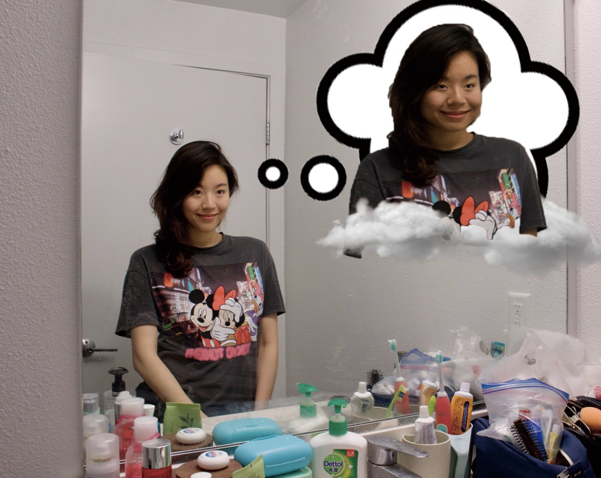

My group members are Talea Rendon,Nhi H.Y Tran, Sabrina Kwong,and me. Our Oblique Strategies is Emphasize the flaws
——YingHong Yuan——
Almost every morning I would stand in front of the mirror and repeat a very hilarious thing, which is to constantly emphasize my flaws. I believe that most girls are like this, otherwise, why we like to wear makeup. Although we look good in the mirror, we just like to pick our own lacks. And then keep emphasizing the flaws.